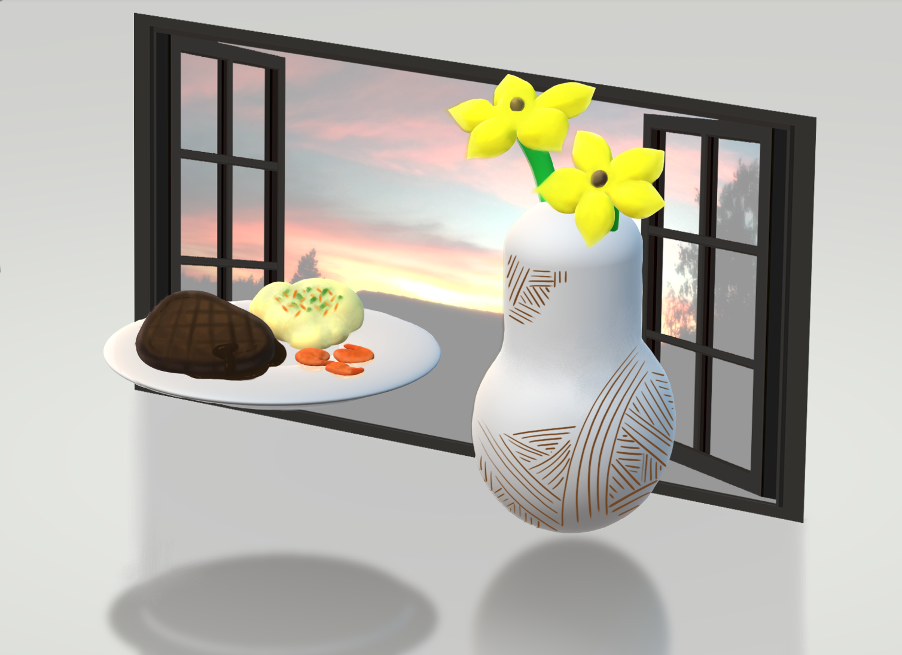
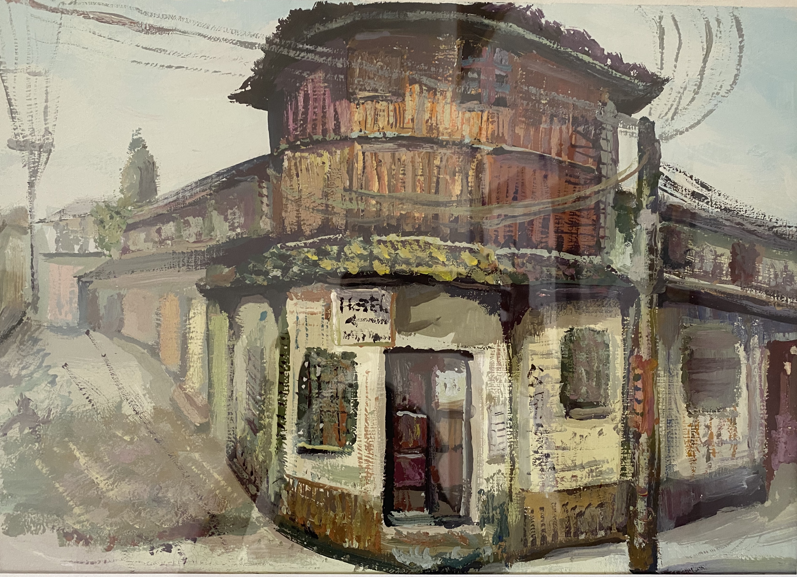
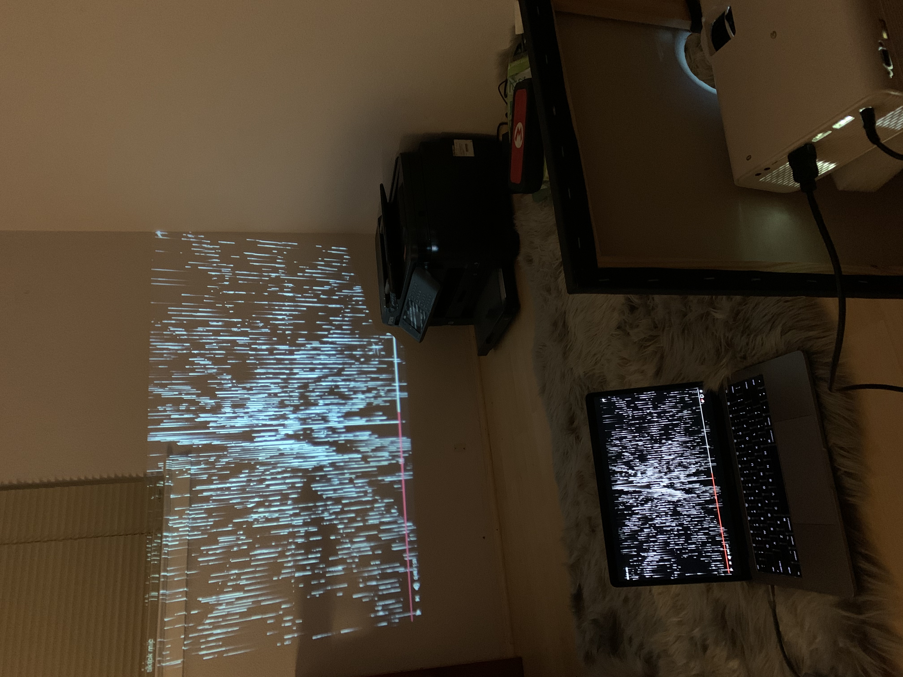
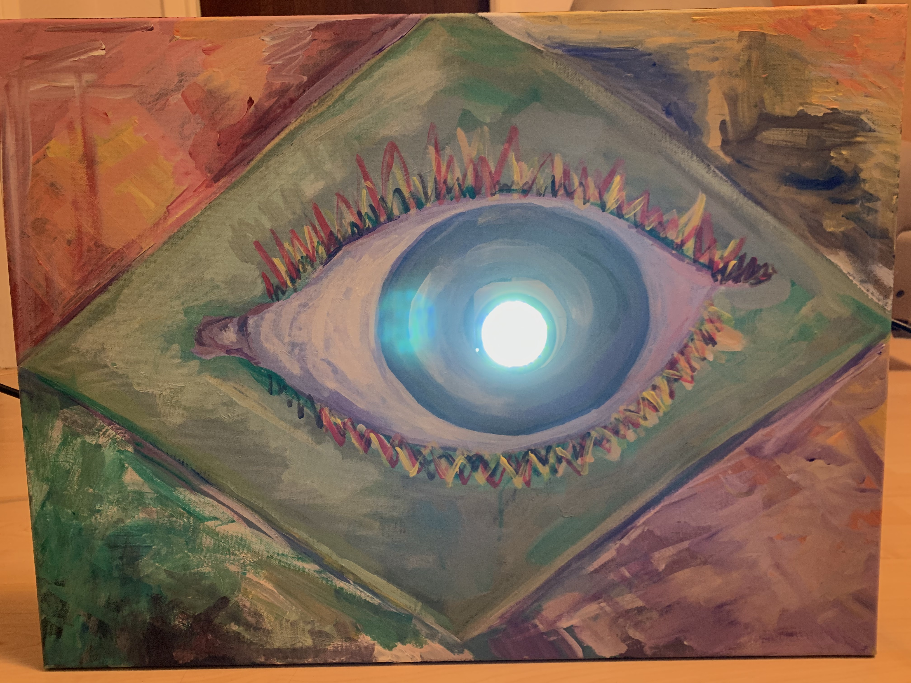
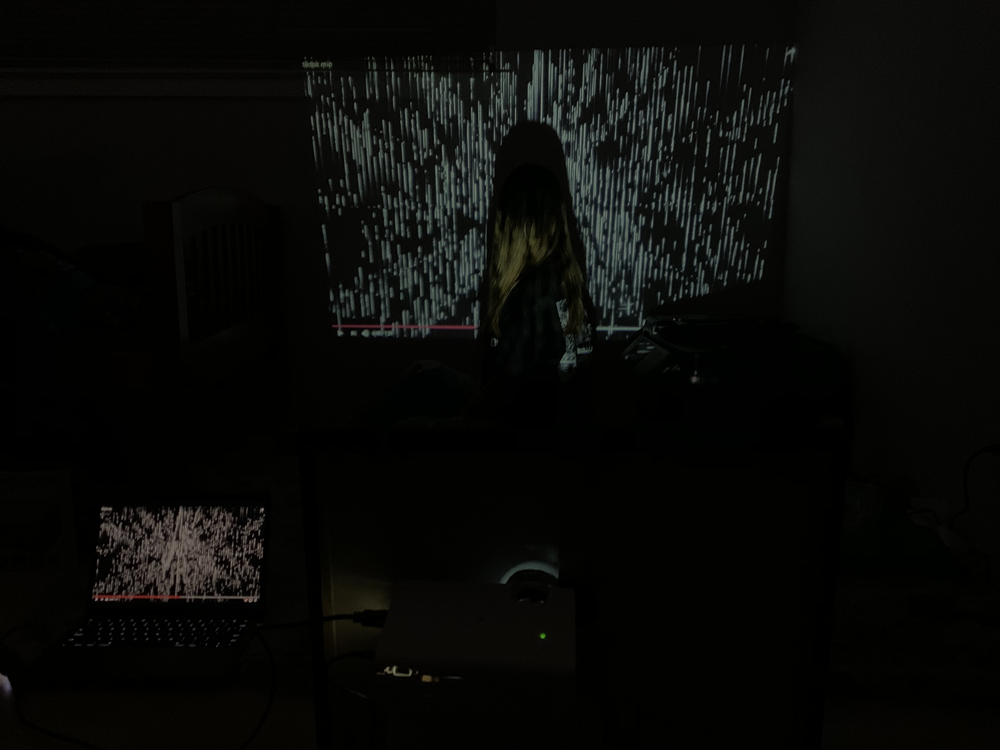

Part 1 -- Oblique Strategies Artwork and Presentations
Group name : DE$IGN3RZ
(Erika) weixiao zhang: weixiao.zhang@sjsu.edu
Charles Graciano: charles.graciano@sjsu.edu
Mengshi Chen: mengshi.chen@sjsu.edu
Almarie Mercado: acmercado3@gmail.com
Choices
Faced with a choice, do both ← we chose this one!
Emphasize differences
A very small object. Its center
Food : group theme
Breakfast:
Bacon and sausage
hot soy milk
Pancakes with ice cream
Lunch:
Noodles with syrup
Peanut butter and jelly with bacon
Dinner:
Steak and mashed potatoes
Fruit salad or meat salad
Dessert:
Chocolate and vanilla ice cream
Hot pot or ice cream/frappuccino
Pazookie ( giant cookie and ice cream )
Mengshi
Charles
Almarie

Erika
Part 2 -- Student Art Presentations and Process
"Collapse” (Digital Video) by Mengshi Maya rendering images and Premier Pro 960 × 540
When I explore virtual reality and physical reality, I found that many dramatic effects can only be achieved in virtual space. But the physical reality is also a contradiction because ideas are derived from physical reality. In this work, what I want to show is a futuristic virtual world. I used the skull as a medium to show the moment when it went from complete to collapse. Just like the problems we have in the real world. Many are hard on the outside, but in fact, they are fragile.However, there are ways to rebuild everything. That's why I put it in a loop.
"Always With Me" (Acrylic Painting) by Mengshi

This is an acrylic painting That I did about six years ago. I was a high school art student. On one of our spring outings, we went to a small town full of dilapidated old houses. As I walked past the house, I had a sudden feeling that I had to draw it. Then I spent the afternoon there. I didn't know why I painted this house, but I always felt that it gave me a sense of mystery and story. I think it's because I lived in such a small village when I was a child, and there are my happy childhood memories there. This old house is my memory, even if it is not the place where I lived when I was a child, but it is a carrier for me.
"My thought" (Digital Video & Acrylic Painting) by Mengshi



This last piece is one of my recent favorites. For a long time, I doubted my own situation. I envy those who have dreams, they know what their goals are and work hard for them, but I don't. I don't know what my dream is, so when people ask me why you want to study this major and why you do these things, I don't know how to answer them. I just want to say that I like it, without any other reasons about my future career prospects. This is also my creative inspiration, my answer.
I want to make art that has no boundaries, that has infinite possibilities, just like Me. These are all different angles of my whole work. As you can see in this painting, the eyes represent the media I see in the world. In this painting you see four different color blocks around it, and the green part represents my comfort zone. When you look closely, there are no clear boundaries between the blocks of color. That's what I mean by infinite possibilities. And my video comes out of the pupils of my eye. The video was made with TouchDesigner. The whole video is chaotic. This is where I am now. This whole project is about me and my answers. It also expresses my desire to make art that has no boundaries, that connects with people, that connects with our real world. The artistic concept of integrating traditional art with digital art, connecting art with people, life and the world, and influencing each other.